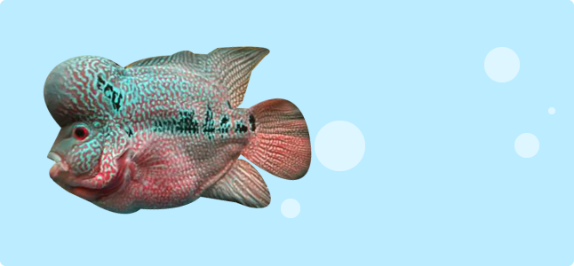
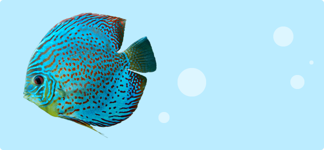
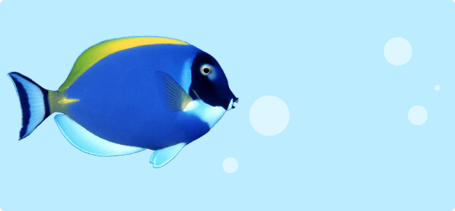

SEA FISH
fish that live in the sea

An example of symbiosis is the relationship
CICHLID
ㅡ
An example of symbiosis is the relationship
between clown fish and sea anemones.

Pterophyllum scalare, most commonly
ANGEL FISH
ㅡ
Pterophyllum scalare, most commonly
called angelfish or freshwater angelfish,is
the most common species of pterophyllum
kept captive.

Namyang rat sea bream is a fish belonging
BLUE TANG
ㅡ
Namyang rat sea bream is a fish belonging
to the family of Yangjwi sea bream of the
agricultural and fishing order, and is the
only species in the genus Namyangjwi sea
bream.